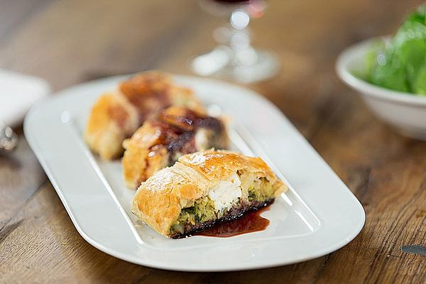

Vegetarische Festtagsrolle
Schwierigkeitsgrad:
⭐⭐⭐⭐
Festmahl ohne Fleisch

Zutaten für die Füllung
| 10 kleine |
Kräuterseitlinge |
| 1 |
Zwiebel (rot) |
| Etwas |
Olivenöl |
| Ein viertel Kopf |
Wirsing |
| Nach Bedarf |
Salz und Pfeffer |
| Nach Bedarf |
Ras el Hanout |
| 1 Hand voll |
Spinat |
| 2 |
Eier |
| 2 |
Eigelb |
| 2 große |
Kartoffeln, mehligkochend |
| 1 EL |
Speisestärke |
| 200g |
Feta-Käse |
Allgemein:
Für die Sauce:
| 2 EL |
Zucker, braun |
| 100ml |
Rotwein |
| 50ml |
Balsamico |
Zubereitung:
- Pilze und Zwiebeln klein schneiden und in der Pfanne mit etwas Olivenöl anbraten. Den Wirsing zuerst in Streifen schneiden und dann würfeln. Ebenfalls mit in die Pfanne geben. Das Gemüse in der Pfanne mit Salz und Pfeffer sowie
Ras el Hanout würzen. Die Gewürze etwas mitrösten lassen und dann den Spinat dazugeben. Anschließend die Herdplatte ausschalten.
- Für die Füllung 2 ganze Eier und 2 Eigelbe in eine Schüssel geben und verquirlen. Die Gemüsemasse aus der Pfanne mit dazugeben und gut unterheben. Die vorgekochten Kartoffeln mit einer Gabel zerdrücken und in die Schüssel zu den
anderen Zutaten geben. Die Stärke ebenfalls hinzufügen und alles zu einer homogenen Masse vermengen.
- Blätterteig auf Backpapier auslegen und auf ein Backblech geben. 1 Ei mit etwas Wasser verquirlen und den Blätterteig mit der Eiermischung bestreichen. Danach die Gemüsemasse auf dem Blätterteig verteilen. An allen Seiten etwa
6 - 7 cm Platz lassen, um den Blätterteig später an den Seiten einschlagen zu können.
- Feta-Käse in dickere Streifen schneiden und in die Mitte der Füllung geben. Dann den Blätterteig über die Füllung klappen und gut andrücken. Die kurzen Seiten noch mit etwas Eiermischung einpinseln und aufrollen. Danach die komplette
Rolle noch einmal mit der Eiermischung bestreichen.
- Wichtig ist, dass die Rolle keine Löcher hat. Andernfalls könnte sie auslaufen und trocken werden.
- Die Rolle in den Ofen geben und ca. 40 Minuten bei 180 °C Heißluft backen, bis der Blätterteig knusprig-braun ist.
- In der Zwischenzeit die Soße zubereiten. Dafür 2 EL braunen Zucker karamellisieren lassen und anschließend mit 100 ml Rotwein sowie 50 ml Balsamico ablöschen.
- Die fertige Rolle 10 Minuten ruhen lassen und in Stücke schneiden, mit der warmen Soße servieren. Dazu passt Salat wie zum Beispiel Feldsalat.